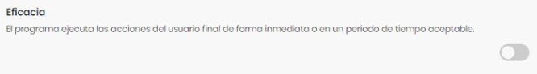
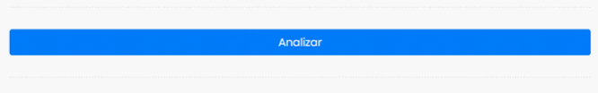
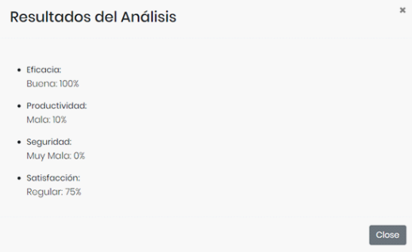

Ayuda
Esta aplicación tiene el propósito de medir la calidad de cualquier producto software. Mide la calidad interna, calidad externa y la calidad de uso ofreciendo una valoración entre muy mala, mala, regular y buena.
Uso de QMS
Vas a encontrar las preguntas de manera desactivadas de color gris responda tocando el botón en caso de que la respuesta sea afirmativa de ser lo contrario no lo presione.

Al presionar el botón cambiara al color azul.

Al finalizar todas las preguntas presione el botón azul que dice analizar.

Se les mostrará los resultados de los análisis.

Preguntas Frecuentes
¿Tiene algún tipo de costo usar este sistema?
No tiene coste alguno usar el sistema y recibir la retro alimentación del análisis.
¿Es obligatorio seguir todas las recomendaciones?
No es obligatorio seguir al pie de la letra las recomendaciones, pero si se aconseja seguir todos los indicadores para mejorar su producto software.
¿Los datos que ingreso son compartidos con terceros?
En lo absoluto todos los datos de su cuenta son privados y no se comparte información con terceros.